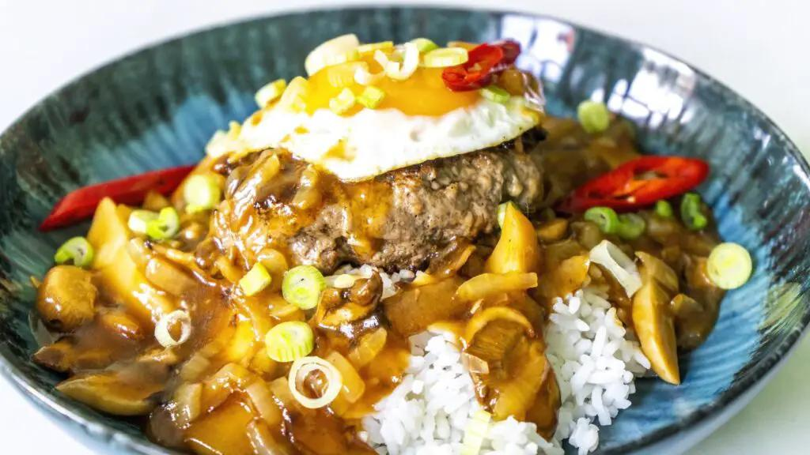

Loco Moco
A great comfort (or hangover food) of Hawaiian origins that consists of rice, hamburger, a fried egg and brown gravy.

Ingredients
Burger
- 500 grams Ground Beef (I use a standard 80/20 but you can go leaner if you prefer since the gravy has tons of fat in it anyways)
- 1 tsp Salt
- 1/2 tsp MSG
- 1 tsp Garlic Powder
- 1 tsp Worcestershire Sauce
- 1/2 tsp Black Pepper (freshly cracked)
Brown Gravy
- 500 ml Chicken Stock (if salted, you shouldn’t need to add extra salt. If unsalted, adjust salt to taste)
- 250 grams Mushrooms (I use King Oyster mushrooms, but you can use whichever ones you prefer)
- 1 Yellow Onion (diced)
- 2 tsp Soy Sauce
- 1 tbsp Ketchup
- 3 Anchovy Fillets
- 1 tbsp Corn Starch (or more if needed)
- 3 tbsp Butter
- Black Pepper (freshly cracked, to taste)
- Oil (as needed. I use sunflower oil but you can use any neutral oil you prefer)
Other
- White Rice (as needed)
- Green Onion (chopped, for garnish)
- Red Chili Pepper (thinly sliced, for garnish)
- Fried Eggs
Preparation
- You can make your rice ahead of time, and the eggs and garnishes at the end.
- Add all the burger ingredients to a large bowl and mash everything together with your hands until you have a nice homogenous mix. Cover bowl and place in fridge.
- Place your pan on medium-high heat and add a good amount of oil. Add in your sliced mushrooms and let fry until slightly browned. Add in the diced onion and stir until the onion is translucent or browned.
- Add in the chicken stock, ketchup, soy sauce, and anchovy fillets and bring to a boil, then reduce to a simmer and let simmer until slightly thickened, about 10 minutes.
- Mix the corn starch with a quarter or half cup of water and add the slurry into the gravy. Stir it around and let thicken for just a couple minutes, Take off the heat and move the gravy to another bowl. Add in the butter and stir it around until the butter is melted and incorporated. Add freshly cracked black pepper to taste.
- Take the hamburger mix out of the fridge and form it into balls or patties.
- Get your pan back up to medium-high heat and place down the meat. Cook until done and then turn off the heat.
- While the meat is cooking you can prepare the loco moco bowls. Lay down some rice as a base, then when the hamburger is done place that on top. Spoon over the brown gravy. Finally quickly fry an egg sunny side up and place that right on top. You can add more brown gravy on top of the egg if you like, otherwise you can sprinkle with chopped scallions and chili peppers, or whatever other garnishes you prefer.